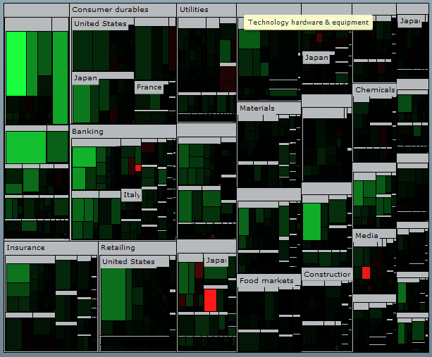

Treemaps are often described as graphical pivot tables
that can be used to explore large data sets by using convenient drill-down
capabilities. Treemaps reveal data patterns and trends easily. Treemaps
rely on data clustering, using areas and color information to represent
the data you want to explore.
An example of a treemap is shown below. The treemap shows
business sectors at the head of the hierarchy and provides the possibility
to drill down to country and then company level.

IBM® ILOG Elixir supports squarified and alternating (also known as slice-and-dice)
type algorithms for two-dimensional treemaps, and gives you a great
deal of control over the appearance.
InIBM ILOG Elixir, treemaps are characterized by the
ability to:
Map the size, color, and label of treemap
items to properties in the
dataProvider.
Choose which treemap packing algorithm
is used to arrange the treemap items.
Choose either a predefined algorithm
for computing the item colors or specify a color using a customizable
color function.
Specify the margins between the treemap
items.
Specify the treemap levels at which
labels are to appear.
Get an event when clicking and hovering
over treemap items.
Navigate within a treemap with visual
effects on drill down.